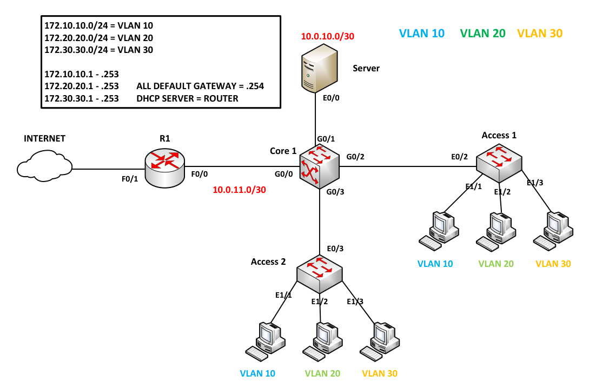

Layer 3 Switch Inter-VLAN with DHCP and NAT

Configuring SW1 (L3 Switch)
On SW1, set the hostname to 'SW1', create the necessary VLANs 10, 20, 30, and assign G1/1, G1/2, and G1/3 to their respective VLANs based on the diagram.
Switch>enable
Switch#config terminal
Enter configuration commands, one per line. End with CNTL/Z.
Switch(config)#hostname SW1
SW1(config)#
SW1(config)#vlan 10
SW1(config-vlan)#vlan 20
SW1(config-vlan)#vlan 30
SW1(config-vlan)#
Now that the VLANs are created, type the command 'show vlan brief' to check the necessary VLANs
SW1(config-vlan)#
SW1(config-vlan)#end
SW1#show vlan brief
VLAN Name Status Ports
---- -------------------------------- --------- -------------------------------
1 default active Gi0/3, Gi1/0, Gi1/1, Gi1/2
Gi1/3, Gi2/0, Gi2/1, Gi2/2
Gi2/3, Gi3/0, Gi3/1, Gi3/2
Gi3/3
10 VLAN0010 active
20 VLAN0020 active
30 VLAN0030 active
1002 fddi-default act/unsup
1003 token-ring-default act/unsup
1004 fddinet-default act/unsup
1005 trnet-default act/unsup
SW1#
Assign the necessary interfaces to their respective VLANs
SW1#
SW1#conf t
SW1(config)#
SW1(config)#interface g1/1
SW1(config-if)#switchport access vlan 10
SW1(config-if)#
SW1(config-if)#int g1/2
SW1(config-if)#switchport access vlan 20
SW1(config-if)#
SW1(config-if)#int g1/3
SW1(config-if)#switchport access vlan 30
SW1(config-if)#end
SW1#
SW1#
SW1#show vlan brief
VLAN Name Status Ports
---- -------------------------------- --------- -------------------------------
1 default active Gi0/3, Gi1/0, Gi2/0, Gi2/1
Gi2/2, Gi2/3, Gi3/0, Gi3/1
Gi3/2, Gi3/3
10 VLAN0010 active Gi1/1
20 VLAN0020 active Gi1/2
30 VLAN0030 active Gi1/3
1002 fddi-default act/unsup
1003 token-ring-default act/unsup
1004 fddinet-default act/unsup
1005 trnet-default act/unsup
SW1#
Now, create SVIs (Switched Virtual Interfaces); these will serve as the default gateways for each VLAN. Additionally, add the IP address of the DHCP Server to inform SW1 on how to redirect DHCP broadcast traffic. Use the command 'ip helper-address {server}' and use show ip interface brief to verify the config.To enable routing between VLANs, execute the command 'ip routing'.
SW1#conf t
Enter configuration commands, one per line. End with CNTL/Z.
SW1(config)#
SW1(config)#interface vlan10
SW1(config-if)#ip address 172.10.10.254 255.255.255.0
SW1(config-if)#ip helper-address
SW1(config-if)#ip helper-address 10.0.10.1
SW1(config-if)#
SW1(config-if)#int vlan 20
SW1(config-if)#ip address 172.20.20.254 255.255.255.0
SW1(config-if)#ip helper-address 10.0.10.1
SW1(config-if)#
SW1(config-if)#int vlan 30
SW1(config-if)#ip address 172.30.30.254 255.255.255.0
SW1(config-if)#ip helper-address 10.0.10.1
SW1(config-if)#
SW1(config-if)#end
SW1#show ip interface brief
Interface IP-Address OK? Method Status Protocol
GigabitEthernet0/2 unassigned YES unset up up
GigabitEthernet0/3 unassigned YES unset down down
GigabitEthernet0/0 unassigned YES unset down down
GigabitEthernet0/1 unassigned YES unset down down
GigabitEthernet1/0 unassigned YES unset down down
GigabitEthernet1/1 unassigned YES unset up up
GigabitEthernet1/2 unassigned YES unset up up
GigabitEthernet1/3 unassigned YES unset up up
GigabitEthernet2/0 unassigned YES unset down down
GigabitEthernet2/1 unassigned YES unset down down
GigabitEthernet2/2 unassigned YES unset down down
GigabitEthernet2/3 unassigned YES unset down down
GigabitEthernet3/0 unassigned YES unset down down
GigabitEthernet3/1 unassigned YES unset down down
GigabitEthernet3/2 unassigned YES unset down down
GigabitEthernet3/3 unassigned YES unset down down
Vlan10 172.10.10.254 YES NVRAM up up
Vlan20 172.20.20.254 YES NVRAM up up
Vlan30 172.30.30.254 YES NVRAM up up
SW1#
SW1#configure terminal
Enter configuration commands, one per line. End with CNTL/Z.
SW1(config)#
SW1(config)#ip routing
SW1(config)#
Now, we create routed ports connected to the server and router. The network between the server and SW1 is 10.0.10.0/30, and between R1 and SW1 is 10.0.11.0/30.
SW1(config)#
SW1(config)#interface g0/0
SW1(config-if)#no switchport
SW1(config-if)#
SW1(config-if)#ip address 10.0.11.2 255.255.255.252
SW1(config-if)#no shutdown
SW1(config-if)#
SW1(config-if)#interface g0/1
SW1(config-if)#no switchport
SW1(config-if)#ip address 10.0.10.2 255.255.255.252
SW1(config-if)#no shutdown
SW1(config-if)#end
SW1#
SW1#
SW1#show ip interface brief | exc unass
Interface IP-Address OK? Method Status Protocol
GigabitEthernet0/0 10.0.11.2 YES NVRAM up up
GigabitEthernet0/1 10.0.10.2 YES NVRAM up up
Vlan10 172.10.10.254 YES NVRAM up up
Vlan20 172.20.20.254 YES NVRAM up up
Vlan30 172.30.30.254 YES NVRAM up up
SW1#
Now, configure a trunk to the neighboring switch, SW2, allowing only the necessary VLANs and disabling DTP.
Note
If the switch supports both ISL and 802.1Q, use the command 'switchport trunk encapsulation dot1q'.
SW1#conf t
Enter configuration commands, one per line. End with CNTL/Z.
SW1(config)#
SW1(config)#int g0/2
SW1(config-if)#
SW1(config-if)#switchport trunk encapsulation dot1q
SW1(config-if)#switchport mode trunk
SW1(config-if)#
SW1(config-if)#switchport trunk allowed vlan 10,20,30
SW1(config-if)#switchport nonegotiate
SW1(config-if)#end
SW1#
SW1#
SW1#show interface trunk
Port Mode Encapsulation Status Native vlan
Gi0/2 on 802.1q trunking 1
Port Vlans allowed on trunk
Gi0/2 10,20,30
Port Vlans allowed and active in management domain
Gi0/2 10,20,30
Port Vlans in spanning tree forwarding state and not pruned
Gi0/2 10,20,30
SW1#
Configuring SW2 (L2 Switch)
Now, add the interfaces to their necessary VLANs on SW2 and configure a trunk to the neighboring switch, allowing only the necessary VLANs and disabling DTP.
Switch>enable
Switch#config terminal
Enter configuration commands, one per line. End with CNTL/Z.
Switch(config)#hostname SW2
SW2(config)#
SW2(config)#vlan 10
SW2(config-vlan)#vlan 20
SW2(config-vlan)#vlan 30
SW2(config-vlan)#
SW2#
SW2#conf t
SW2(config)#
SW2(config)#interface g1/1
SW2(config-if)#switchport access vlan 10
SW2(config-if)#
SW2(config-if)#int g1/2
SW2(config-if)#switchport access vlan 20
SW2(config-if)#
SW2(config-if)#int g1/3
SW2(config-if)#switchport access vlan 30
SW2(config-if)#end
SW2#
SW2#conf t
Enter configuration commands, one per line. End with CNTL/Z.
SW2(config)#
SW2(config)#int g0/2
SW2(config-if)#
SW2(config-if)#switchport trunk encapsulation dot1q
SW2(config-if)#switchport mode trunk
SW2(config-if)#
SW2(config-if)#switchport trunk allowed vlan 10,20,30
SW2(config-if)#switchport nonegotiate
SW2(config-if)#end
SW2#
Configuring Router as DHCP Server
As for the server, instead of using a Windows server, we will use a router to perform DHCP.
DHCP#
DHCP#conf t
DHCP(config)#
DHCP(config)#interface ethernet 0/0
DHCP(config-if)#ip address 10.0.10.1 255.255.255.252
DHCP(config-if)#no shutdown
DHCP(config-if)#
DHCP#show ip int brief | excl unas
Interface IP-Address OK? Method Status Protocol
Ethernet0/0 10.0.10.1 YES manual up up
DHCP#
When configuring the DHCP server, indicate the excluded addresses so that the server knows which addresses are excluded from leases.
DHCP#conf t
Enter configuration commands, one per line. End with CNTL/Z.
DHCP(config)#ip dhcp excluded-address 172.10.10.254
DHCP(config)#ip dhcp excluded-address 172.20.20.254
DHCP(config)#ip dhcp excluded-address 172.30.30.254
DHCP(config)#
To ensure that PCs in different VLANs receive an IP address, create a DHCP pool that includes the range of addresses and specifies the default gateway.
DHCP(config)#
DHCP(config)#ip dhcp pool VLAN10
DHCP(dhcp-config)#network 172.10.10.0 255.255.255.0
DHCP(dhcp-config)#default-router 172.10.10.254
DHCP(dhcp-config)#
DHCP(dhcp-config)#ip dhcp pool VLAN20
DHCP(dhcp-config)#network 172.20.20.0 255.255.255.0
DHCP(dhcp-config)#default-router 172.20.20.254
DHCP(dhcp-config)#
DHCP(dhcp-config)#ip dhcp pool VLAN30
DHCP(dhcp-config)#network 172.30.30.0 255.255.255.0
DHCP(dhcp-config)#default-router 172.30.30.254
DHCP(dhcp-config)#end
DHCP#
DHCP#show ip dhcp pool
Pool VLAN10 :
Utilization mark (high/low) : 100 / 0
Subnet size (first/next) : 0 / 0
Total addresses : 254
Leased addresses : 0
Pending event : none
1 subnet is currently in the pool :
Current index IP address range Leased addresses
172.10.10.1 172.10.10.1 - 172.10.10.254 0
Pool VLAN20 :
Utilization mark (high/low) : 100 / 0
Subnet size (first/next) : 0 / 0
Total addresses : 254
Leased addresses : 0
Pending event : none
1 subnet is currently in the pool :
Current index IP address range Leased addresses
172.20.20.1 172.20.20.1 - 172.20.20.254 0
Pool VLAN30 :
Utilization mark (high/low) : 100 / 0
Subnet size (first/next) : 0 / 0
Total addresses : 254
Leased addresses : 0
Pending event : none
1 subnet is currently in the pool :
Current index IP address range Leased addresses
172.30.30.1 172.30.30.1 - 172.30.30.254 0
DHCP#
Now, create a default gateway for the server so it knows what to do if it doesn't know how to forward packets.
DHCP#conf t
DHCP(config)#ip route 0.0.0.0 0.0.0.0 10.0.10.2
DHCP(config)#
DHCP(config)#do show ip route
Codes: L - local, C - connected, S - static, R - RIP, M - mobile, B - BGP
D - EIGRP, EX - EIGRP external, O - OSPF, IA - OSPF inter area
N1 - OSPF NSSA external type 1, N2 - OSPF NSSA external type 2
E1 - OSPF external type 1, E2 - OSPF external type 2
i - IS-IS, su - IS-IS summary, L1 - IS-IS level-1, L2 - IS-IS level-2
ia - IS-IS inter area, * - candidate default, U - per-user static route
o - ODR, P - periodic downloaded static route, H - NHRP, l - LISP
a - application route
+ - replicated route, % - next hop override
Gateway of last resort is 10.0.10.2 to network 0.0.0.0
S* 0.0.0.0/0 [1/0] via 10.0.10.2
10.0.0.0/8 is variably subnetted, 2 subnets, 2 masks
C 10.0.10.0/30 is directly connected, Ethernet0/0
L 10.0.10.1/32 is directly connected, Ethernet0/0
DHCP(config)#
Connecting PCs to the Internet
Configure the interfaces that are connected to the internet and SW1. FastEthernet 0/1 will use DHCP for addressing.
R1#conf t
Enter configuration commands, one per line. End with CNTL/Z.
R1(config)#interface f0/0
R1(config-if)#ip address 10.0.11.1 255.255.255.252
R1(config-if)#no shutdown
R1(config-if)#
*Nov 28 14:33:13.247: %LINK-3-UPDOWN: Interface FastEthernet0/0, changed state to up
*Nov 28 14:33:14.247: %LINEPROTO-5-UPDOWN: Line protocol on Interface FastEthernet0/0, changed state to up
R1(config-if)#int f0/1
R1(config-if)#ip address dhcp
R1(config-if)#no shutdown
R1(config-if)#
*Nov 28 14:33:44.303: %LINK-3-UPDOWN: Interface FastEthernet0/1, changed state to up
*Nov 28 14:33:45.303: %LINEPROTO-5-UPDOWN: Line protocol on Interface FastEthernet0/1, changed state to up
R1(config-if)#
*Nov 28 14:33:52.767: %DHCP-6-ADDRESS_ASSIGN: Interface FastEthernet0/1 assigned DHCP address 192.168.1.12, mask 255.255.255.0, hostname R1
R1(config-if)#
R1#show ip int brief
Interface IP-Address OK? Method Status Protocol
FastEthernet0/0 10.0.11.1 YES manual up up
FastEthernet0/1 192.168.1.12 YES DHCP up up
Ethernet1/0 unassigned YES unset administratively down down
Ethernet1/1 unassigned YES unset administratively down down
Ethernet1/2 unassigned YES unset administratively down down
Ethernet1/3 unassigned YES unset administratively down down
Ethernet1/4 unassigned YES unset administratively down down
Ethernet1/5 unassigned YES unset administratively down down
Ethernet1/6 unassigned YES unset administratively down down
Ethernet1/7 unassigned YES unset administratively down down
R1#
Any routes not found in SW1's routing table will be redirected to R1, serving as the default route.
SW1#conf t
Enter configuration commands, one per line. End with CNTL/Z.
SW1(config)#ip route 0.0.0.0 0.0.0.0 10.0.11.1
SW1(config)#do show ip route
Codes: L - local, C - connected, S - static, R - RIP, M - mobile, B - BGP
D - EIGRP, EX - EIGRP external, O - OSPF, IA - OSPF inter area
N1 - OSPF NSSA external type 1, N2 - OSPF NSSA external type 2
E1 - OSPF external type 1, E2 - OSPF external type 2
i - IS-IS, su - IS-IS summary, L1 - IS-IS level-1, L2 - IS-IS level-2
ia - IS-IS inter area, * - candidate default, U - per-user static route
o - ODR, P - periodic downloaded static route, H - NHRP, l - LISP
a - application route
+ - replicated route, % - next hop override
Gateway of last resort is 10.0.11.1 to network 0.0.0.0
S* 0.0.0.0/0 [1/0] via 10.0.11.1
10.0.0.0/8 is variably subnetted, 4 subnets, 2 masks
C 10.0.10.0/30 is directly connected, GigabitEthernet0/1
L 10.0.10.2/32 is directly connected, GigabitEthernet0/1
C 10.0.11.0/30 is directly connected, GigabitEthernet0/0
L 10.0.11.2/32 is directly connected, GigabitEthernet0/0
172.10.0.0/16 is variably subnetted, 2 subnets, 2 masks
C 172.10.10.0/24 is directly connected, Vlan10
L 172.10.10.254/32 is directly connected, Vlan10
172.20.0.0/16 is variably subnetted, 2 subnets, 2 masks
C 172.20.20.0/24 is directly connected, Vlan20
L 172.20.20.254/32 is directly connected, Vlan20
172.30.0.0/16 is variably subnetted, 2 subnets, 2 masks
C 172.30.30.0/24 is directly connected, Vlan30
L 172.30.30.254/32 is directly connected, Vlan30
SW1(config)#
In Config 1, define which interface will be the outside and inside interface using the commands 'ip nat inside' and 'ip nat outside.' In Config 2, use an ACL to identify traffic rather than control the traffic.
R1#conf t
Enter configuration commands, one per line. End with CNTL/Z.
R1(config)#int f0/1
R1(config-if)#ip nat outside
R1(config-if)#
R1(config-if)#int f0/0
R1(config-if)#ip nat inside
R1(config-if)#
R1(config-if)#end
R1#
R1#conf t
Enter configuration commands, one per line. End with CNTL/Z.
R1(config)#
R1(config)#access-list 1 permit 172.0.0.0 0.255.255.255
R1(config)#ip nat inside source list 1 interface f0/1 overload
R1(config)#
Note
In this method, we use the outside interface instead of allocating public addresses or implementing static one-to-one mapping.
Use a static route so that R1 knows how to route back to the NATed addresses.
R1(config)#
R1(config)#ip route 172.10.10.0 255.255.255.0 10.0.11.2
R1(config)#ip route 172.20.20.0 255.255.255.0 10.0.11.2
R1(config)#ip route 172.30.30.0 255.255.255.0 10.0.11.2
R1(config)#
R1(config)#
R1(config)#do show ip route
Codes: C - connected, S - static, R - RIP, M - mobile, B - BGP
D - EIGRP, EX - EIGRP external, O - OSPF, IA - OSPF inter area
N1 - OSPF NSSA external type 1, N2 - OSPF NSSA external type 2
E1 - OSPF external type 1, E2 - OSPF external type 2
i - IS-IS, su - IS-IS summary, L1 - IS-IS level-1, L2 - IS-IS level-2
ia - IS-IS inter area, * - candidate default, U - per-user static route
o - ODR, P - periodic downloaded static route
Gateway of last resort is 192.168.1.1 to network 0.0.0.0
172.10.0.0/24 is subnetted, 1 subnets
S 172.10.10.0 [1/0] via 10.0.11.2
172.20.0.0/24 is subnetted, 1 subnets
S 172.20.20.0 [1/0] via 10.0.11.2
172.30.0.0/24 is subnetted, 1 subnets
S 172.30.30.0 [1/0] via 10.0.11.2
10.0.0.0/30 is subnetted, 1 subnets
C 10.0.11.0 is directly connected, FastEthernet0/0
C 192.168.1.0/24 is directly connected, FastEthernet0/1
S* 0.0.0.0/0 [254/0] via 192.168.1.1
R1(config)#
Note
In this configuration, three static routes are used, but 'ip route 172.0.0.0 255.0.0.0 10.0.11.2' is also an option. Other methods, such as setting up dynamic routing, can be employed as long as they can route back to SW1.